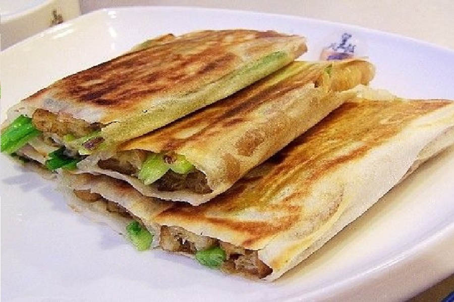
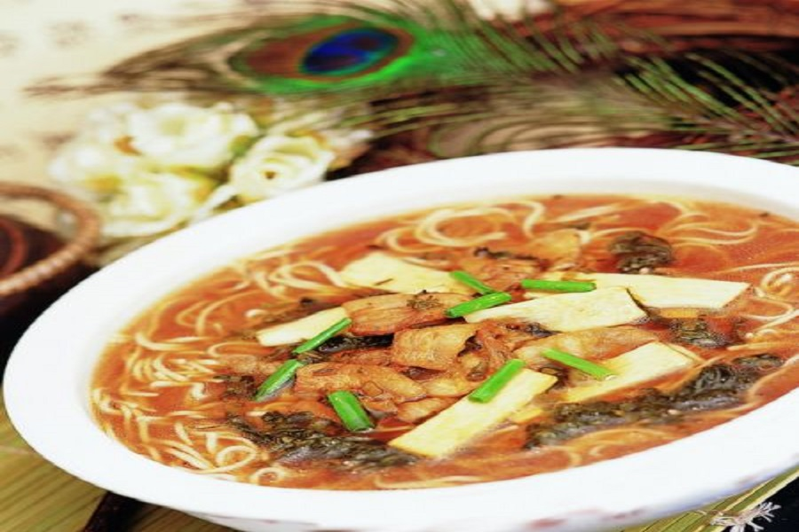

杭州美食-2

1、葱包桧儿
葱包桧儿是杭州特有风味的传统小吃。传说望仙桥畔王二油煎饼店炸“油炸桧”出了名，一时众起仿效，油炸桧店林立杭城。王二有时炸多了，一下子卖不出去，冷了又软又韧，味道不佳，更无人买。他对秦桧夫妇的心头之恨，还愤愤难平，就将冷油炸桧在热锅一烤，把烤熟的油炸桧同葱段卷入拌着甜面酱的春饼里，再用铁板压烤，烤到表皮呈金黄色，油炸桧“吱吱”发叫，王二方才解恨，他拿起来一吃，觉葱香可口，便取名叫“葱包桧儿”，一直流传至今。
回到头部 
2.馄饨小笼
杭城馄饨小笼驰名中外，已有百年历史。大肉馄饨采取“重馅薄皮，以大改小”的方法，选用精白面粉擀成薄皮；又以精肉为馅，不用味精，用鸡汤煮肉皮取冻拌入，以取其鲜，洒入少量研细的芝麻，以取其香；还根据不同节令取蟹粉或春竹、虾仁和入肉馅，每只馒头折裥十四只以上，一两面粉制作十只，形如荸荠呈半透明状，小巧玲珑。
回到头部 
3.西湖藕粉
西湖藕粉是杭州名产之一。其风味独特，富含营养。 杭州艮山门外到余杭县一带是西湖藕粉主产地，塘栖三家村所产尤为著名，旧时是为皇家提供“贡粉”。 藕是荷花在地下的茎，经特别加工制成的藕粉，呈薄片状，质地细滑，色泽白中透红。服用时只需先用少量冷水调和，再用开水冲调成糊状即可，冲泡后的藕粉晶莹透明，口味清醇，有生津开胃，养血益气的功效，是极适用于婴孩、老人、病人的滋补品。
回到头部
4.片儿川
片儿川是杭州的一种著名汤面，面的浇头主要由雪菜、笋片、瘦肉丝组成，鲜美可口。已有百余年历史，最早由杭州老店奎元馆首创，其特色在于雪菜和笋片的鲜美，让食客吃后回味无穷。片儿川的价格适中，是杭州市民最喜爱的日常小吃之一。
回到头部 
5.幸福双
幸福双最早由知味观创制，该店已有八十多年历史，因它一般成双供应，故名幸福双。它是用面团摘剂，包豆沙、干果馅经蒸而成。幸福双是杭州风味小吃店知味观独创的油包点心，因成双出售，故名。
回到头部